Network-related products |
Programmable Controllers MELSEC
Rangkaian CC-Link IE

Programmable Controllers
Modul CPU tertanam CC-Link IE
- Modul CPU dengan CC-Link IE tertanam
- Dua port Ethernet di sisi jaringan memungkinkan modul beroperasi sebagai stasiun induk/lokal Ethernet atau CC-Link IE Field Network, atau sebagai stasiun kontrol/normal CC-Link IE Controller Network
- Port Ethernet di sisi CPU digunakan sebagai port komunikasi Ethernet
- Dua port Ethernet di sisi jaringan dapat digunakan sebagai gateway
■ Kombinasi jaringan*1
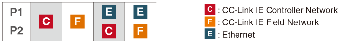
- *1.Jaringan CC-Link IE Field dan CC-Link IE Controller tidak dapat digunakan bersama-sama.
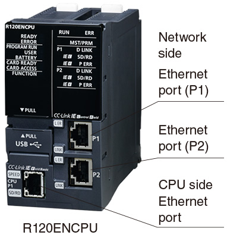
Modul antarmuka Ethernet yang mendukung multi-jaringan
- RJ71EN71*2
- Port Ethernet ganda memungkinkan modul untuk beroperasi sebagai stasiun induk/lokal Ethernet atau CC-Link IE Field Network, atau stasiun kontrol/normal CC-Link IE Controller Network
■ Kombinasi jaringan*3
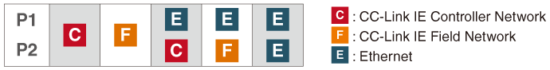
- *2.Fungsi komunikasi keselamatan tidak didukung.
- *3.Jaringan CC-Link IE Field dan CC-Link IE Controller tidak dapat digunakan bersama-sama.
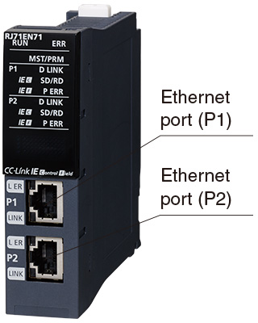
Modul master/lokal CC-Link IE Field Network
- Modul-modul ini dapat digunakan sebagai stasiun induk atau stasiun lokal CC-Link IE Field Network
- Fitur jaminan data blok berbasis stasiun memastikan integritas data antar stasiun (Penundaan keluaran dapat dipersingkat dengan sinkronisasi dengan pemrosesan END)
- Jika dikombinasikan dengan CPU Keamanan Seri MELSEC iQ-R, RJ71GF11-T2 dapat digunakan sebagai stasiun induk/lokal keamanan
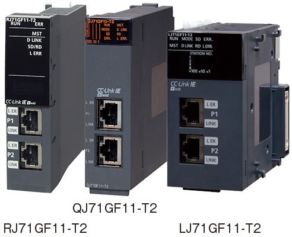
Modul Jaringan Pengontrol CC-Link IE
- Modul-modul ini dapat digunakan sebagai kontrol Jaringan Pengendali CC-Link IE atau stasiun normal
- Memungkinkan koneksi catu daya eksternal (QJ71GP21S-SX), yang memastikan komunikasi bahkan jika daya pengendali terputus
- Fitur jaminan data blok berbasis stasiun memastikan integritas data antar stasiun
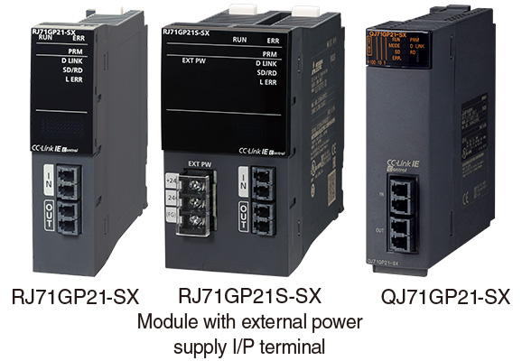
Modul gerak sederhana CC-Link IE Field Network
- Melakukan kontrol I/O berkecepatan tinggi dan gerakan dalam satu jaringan, dan menyediakan tata letak sistem yang sesuai dengan kabel yang sangat fleksibel
- Melakukan kontrol gerakan tingkat lanjut seperti kontrol sinkron, cam, dan pemosisian termasuk kontrol lintasan
- Dapat digunakan sebagai stasiun induk CC-Link IE Field Network*4
- *4.RD77GF tidak mendukung fungsi sub-master.
QD77GF tidak mendukung fungsi komunikasi lokal, sub-master, dan keselamatan.
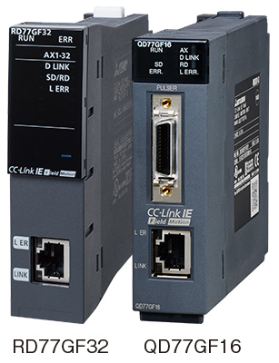
Modul kepala jarak jauh CC-Link IE Field Network*5
- Stasiun jarak jauh dapat diwujudkan melalui kombinasi MELSEC iQ-R Series I/O dan modul fungsi cerdas yang digunakan bersama dengan modul ini
- Melalui fleksibilitasnya dalam desain sistem, stasiun jarak jauh dapat dibuat berdasarkan ukuran aplikasi
- Dapat mengakses stasiun lain di jaringan melalui port USB dan melakukan pengaturan dan pemantauan parameter, sehingga menghemat waktu konfigurasi sistem
- *5.Untuk rincian modul yang berlaku, silakan merujuk ke manual produk yang relevan.
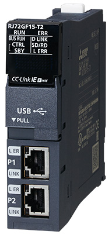
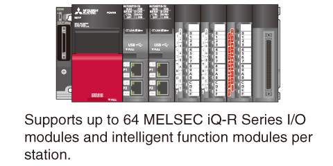
Modul kepala Jaringan Lapangan CC-Link IE*6
- Stasiun jarak jauh dapat diwujudkan melalui kombinasi MELSEC-L Series I/O dan modul fungsi cerdas yang digunakan bersama dengan modul ini
- Melalui fleksibilitasnya dalam desain sistem, stasiun jarak jauh dapat dibuat berdasarkan ukuran aplikasi
- Dapat mengakses stasiun lain di jaringan melalui port USB dan melakukan pengaturan dan pemantauan parameter, sehingga menghemat waktu konfigurasi sistem
- *6.Untuk detail modul yang berlaku, lihat manual produk yang relevan.
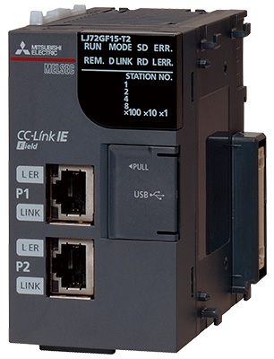
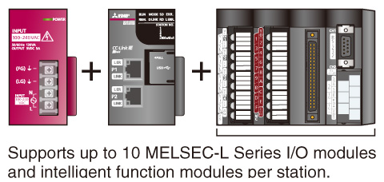
Modul stasiun perangkat cerdas CC-Link IE Field Network
- Memungkinkan koneksi MELSEC iQ-F Series ke CC-Link IE Field Network sebagai stasiun perangkat cerdas
- Dapat dihubungkan ke CC-Link IE Field Network berkecepatan tinggi dan berkapasitas tinggi, yang juga mendukung kontrol terdistribusi, sehingga mewujudkan waktu siklus operasi yang lebih singkat dan keterlacakan yang lebih baik
- Mendukung komunikasi yang lancar, yang memungkinkan pengaturan dan pemeliharaan dari titik mana pun yang terhubung ke jaringan termasuk komputer dan perangkat di lantai pabrik
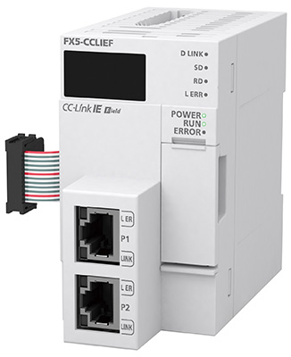